A.I.
Artistic Intelligence
Kasper Jordaens


artist
research engineer
Can
Artificial Intelligence
be creative?
KASPAROV
vs
deep blue

Alternative Facts - 2023
Bots are great

if you collaborate
(How) does
Artificial Intelligence
think?
2 moves/sec
vs
200M moves/sec
Chess
10^120
10^44
vs
Music
10^12
10^12 * 10^8
10^12 * 10^8 * X * ...
10^xyz / ???
Flemisch Raving Masters - 2023
The secret to creativity is knowing how to hide your sources
Albert Einstein
If you steal from one author, it's plagiarism,
if you steal from many, it's research.
Wilson Mizner
If I have seen further than others,
it is by standing upon the shoulders of giants.
Isaac Newton
Good artists copy, great artists steal.
Pablo Picasso
(again) Can
Artificial Intelligence
be creative?
prompt engineering
Embrace Imperfections

Cluster Analysis

Convert The Rhythm To A Melody

fill Every Beat With Something

Get Your Neck Massaged

Imagine The Music As A Set Of Disconnected Events

the Tape Is Now The Music

twist the spine
Oblique Diffusions - 2022
Analyze

Psychoananalyst: What do you see?

Computer: ...
Deep Dream Analysis - 2017


SOUL


BOTBOP
S.N.E.A.K.P.E.E.Q
 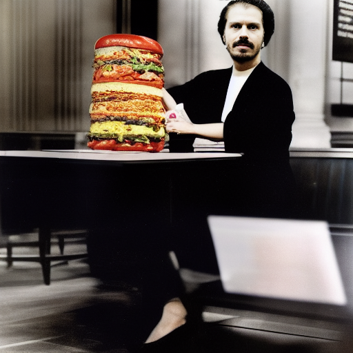
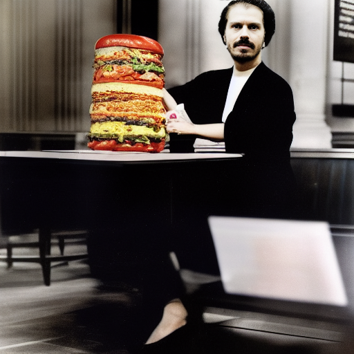
 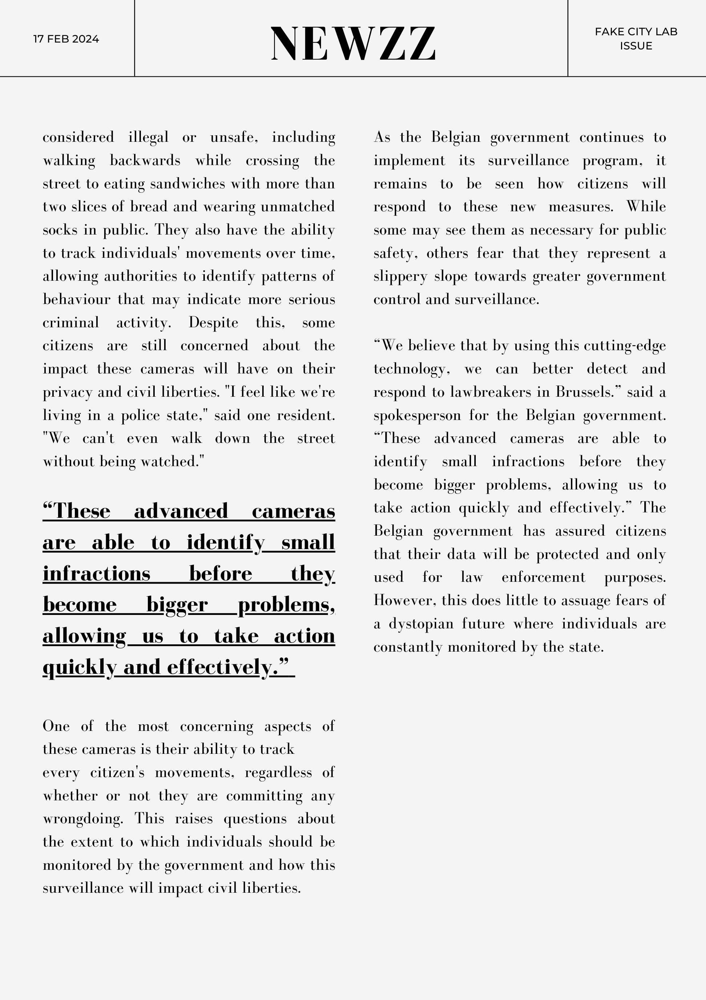
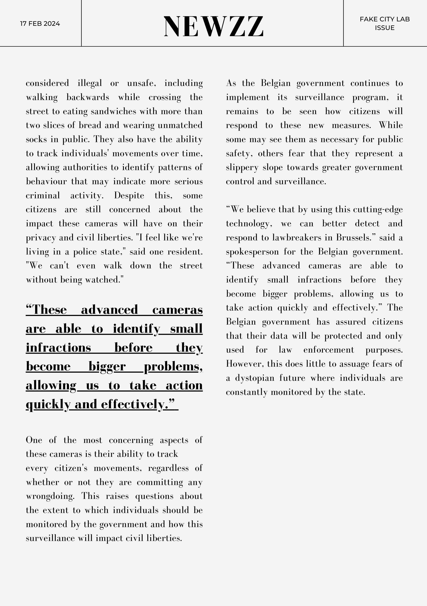
DATA Intersect study
 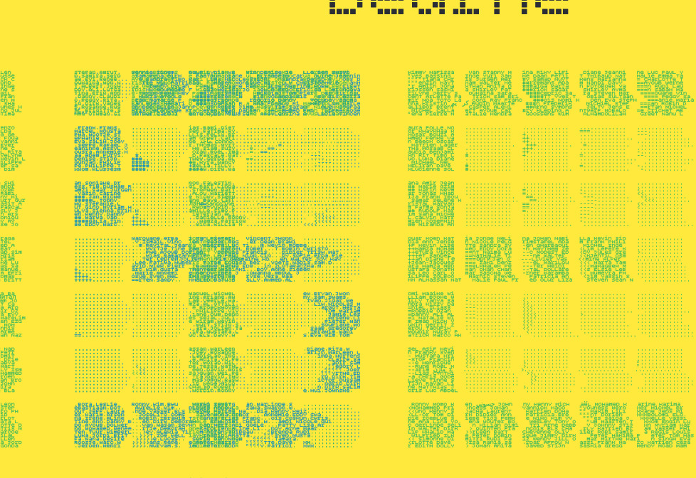
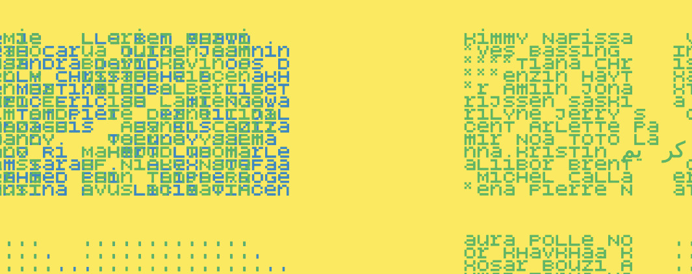
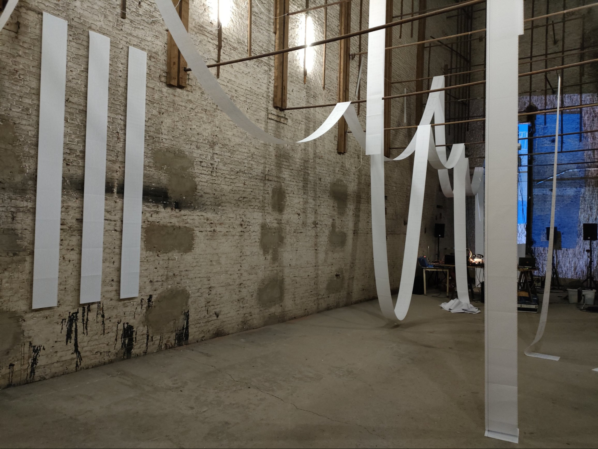
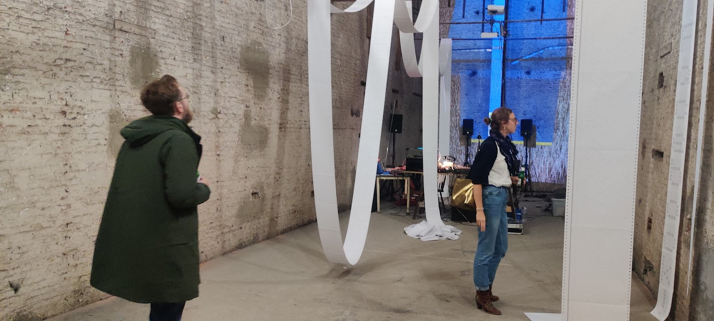
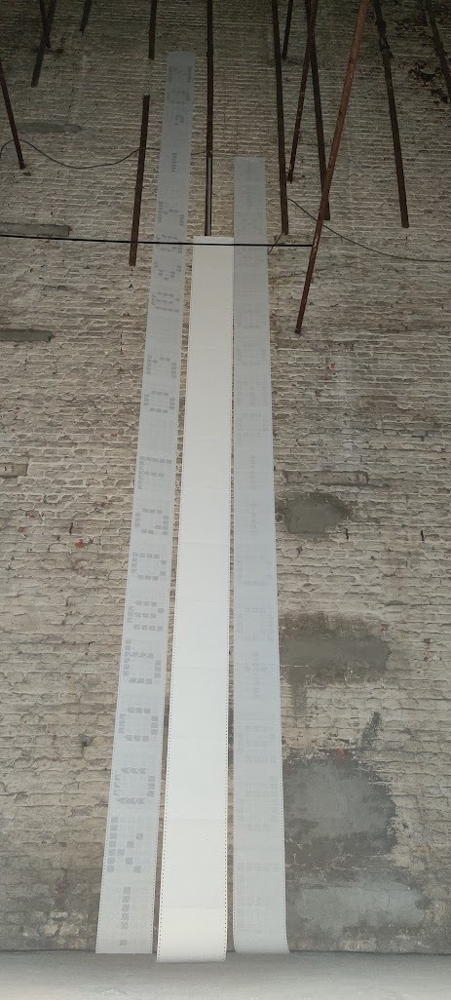
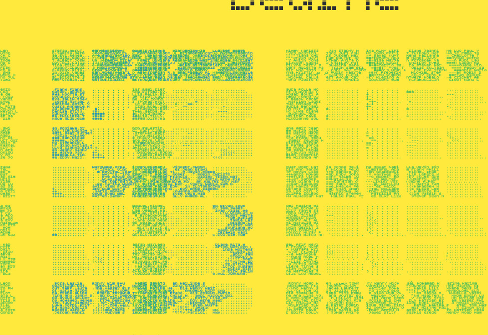
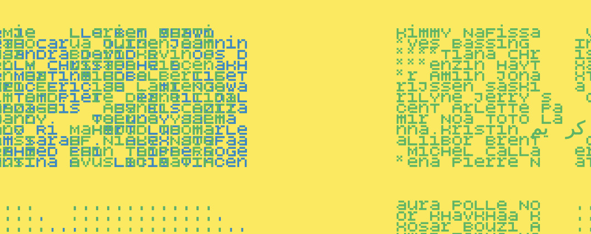
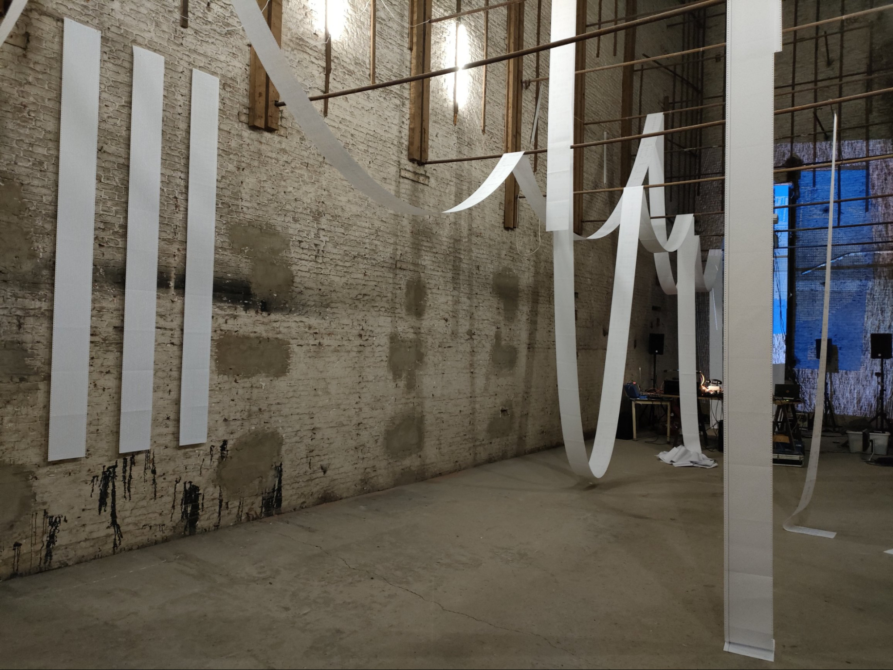
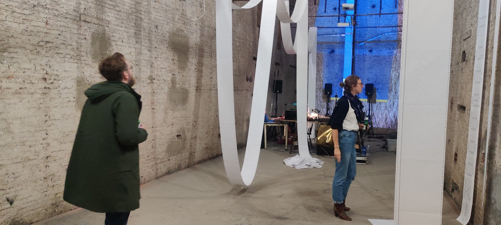
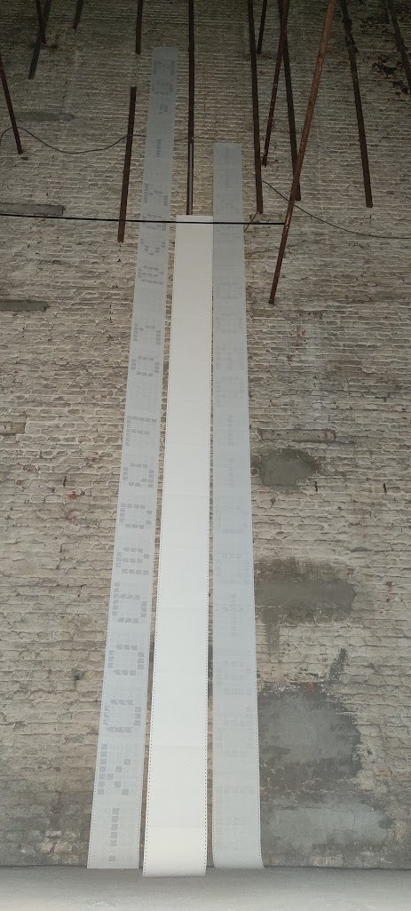

Combine

+

=